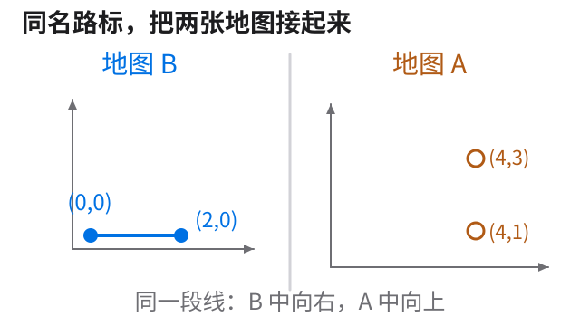
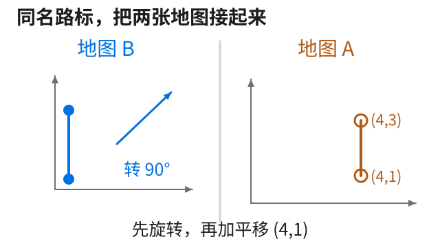
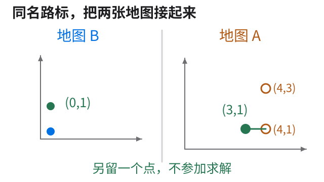
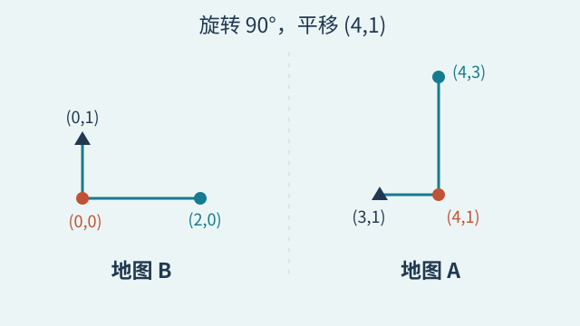

星期一从大厅向右走，星期三从楼梯口向左走，两次都画下了一部分平面图。每次从自己的起点开始计步，原点和方向自然各不相同。两张图共同画到了储物柜和楼梯，正好可以用来确定怎样将它们放在同一张纸上。
先弄清哪些数据共享坐标
一次连续采集称为一个会话。会话内部的相邻关键帧通常由里程计或配准连接，但新会话的原点常常重新设定。即便两次采集都用米，第二张图的 (1,0) 也未必是第一张图的 (1,0)。合图首先需要两次都观测到的同一处结构，以及它们各自在本地地图里的位置。
重叠区域的形状决定能估出什么。只有一面大白墙时，沿墙滑动后仍然能够对齐。墙角、门口和楼梯转折组成的立体结构提供更多方向约束。单目地图若没有已知尺度，两次重建的比例还可能不同，合并时需额外建立尺度依据。
算出第二张图往哪里放
用二维地图演算。某个角点在地图 B 的坐标是 (0,0)，在地图 A 中是 (4,1)。第二个标志在 B 中是 (2,0)，在 A 中是 (4,3)。这说明 B 的正 x 方向对应 A 的正 y 方向。设两图尺度一致、都是右手坐标，先把 B 点逆时针转九十度，再平移 (4,1)，这两个标志就同时对上。
用一段线定朝向，再用一个点查错
这是尺度一致的二维例子。地图B里的两个标志是(0,0)、(2,0)，在地图A里分别是(4,1)、(4,3)。两套小图各有自己的原点，画面位置不代表共同世界坐标。

先比较两点之间的方向
查看大图
同一段标志连线在B中向右，在A中向上，长度都为2。先看差向量就能排除原点位置的影响：B里的正x应转到A里的正y。若只把两个起点叠到一起而不处理朝向，第二个标志仍会落到错误方向。

旋转后再放到目标位置
查看大图
把B中的点逆时针旋转90度，再加(4,1)，其原点落在A的(4,1)，第二点则落到(4,3)。所有B点都必须使用这一个变换，不能为了让某处更好看单独挪动它。真实有噪声地图需要更多分散的共同结构。

检查没有参与计算的点
查看大图
现在拿出第三个点：B中的(0,1)先旋转成(−1,0)，再平移成A中的(3,1)。它位于第一个标志的左侧。去A图核对这个位置，能发现把旋转方向写反、标志配错或局部地图变形等问题，而不只是重复检查两个已拟合点。
统一坐标只能消除整体原点与朝向差异。两次扫描内部已有的弯曲漂移，还需要额外约束与联合优化处理。
小练习：只共有一个柱心，且两图尺度已知，能否唯一确定二维朝向？
不能。两个柱心可以重合，但B仍可绕这个柱心转动；还需另一处不同位置的共同结构来约束朝向。
留一个没有参与估计的标志做测试。若它在 B 中的位置是 (0,1)，旋转后成为 (−1,0)，再平移应落到 A 的 (3,1)。在 A 中查找真实观测，若它落在另一侧，先核对旋转方向和标志对应关系。三维实景需要足够多、空间分布良好的对应，两个二维点只是便于纸笔演算的例子。


一条跨图连接能约束哪些运动
假设两次扫描只共同认出一根柱子，并且你只记下它的中心。在二维地图上，可以平移 B 让两个柱心完全重合，但仍然能围绕这根柱子任意转动整张 B。再找到第二个不同位置的标志，就能用二者之间的连线确定朝向。若两个标志贴得很近，同样的测量误差对朝向的影响会更大。
三维问题中，两个点确定一条轴，仍可绕这条轴转动。若有三个可靠且不共线的同名点，在尺度已知、允许的变换是刚体且对应正确时，才能在理想无噪声情况下确定三维对齐。真实扫描往往需要更多、分布更广的观测，用额外点来检验错误对应和估计不确定性。
当一次扫描自己也已经走歪
把整张 B 图乘上一个固定变换，能改掉原点和朝向的差异，却无法消除某次采集内部逐步积累的弯曲。可以把两次的关键帧或局部点云都作为节点，分别保留各会话内部的相邻约束，再添加几条经验证的跨会话边。优化器在固定一个参考节点后，按测量不确定度共同调整其他节点。
选在入口附近的跨图约束如果只来自一排相同柜门，很可能连错柜子。留出距离入口较远的墙角、台阶和门洞，对比合并前后同一结构的厚度和间距，再统计跨图边的误差。两张地图确实没有重叠或外部共同参考时，单靠各自内部数据无法推知它们之间的唯一相对位置；此时记录“仍缺连接”，比硬把两个起点画到一起更准确。
一个闭合小环能暴露矛盾的边
在纸上按 A1、A2、B2、B1 排成一圈。A1 到 A2 是第一次扫描估出的相对运动，B1 到 B2 来自第二次，另外两条边由跨次匹配得到。按方向依次组合四个变换，理想情况下应回到起点并恢复朝向。若绕完回到旁边一米处，至少有一部分观测与其他边不一致。
残差不能单独告诉你是哪一条边错。调出各边的重叠区域、几何分布与传感器精度，先查只依赖重复物体的跨图边。空间较远处再建立一条独立连接，可以检验原本的对齐是否经得住更大范围的约束。把“局部柜角对齐”与“两张整图拼接成功”区别开，才不会在后续导航中累积未发现的错位。